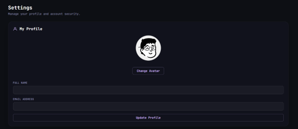

What I Built

An ASP.NET e-learning platform built by a project team, spanning learning materials, quizzes, virtual labs and community features across three roles. My contribution was the avatar system — a layered character builder and its integration into every user's profile.
View Source on GitHubEduSphere is a learning platform covering the pieces a course actually needs: lecturers upload materials, set quizzes and run virtual lab sessions; students browse materials, sit quizzes, join labs and track their own learning; and administrators oversee content, community and accounts from a command centre.
It is built on ASP.NET Web Forms against SQL Server, with the interface split into role-specific areas so each type of user only ever sees their own part of the system.
A platform students return to daily needs some reason to feel like theirs, which is where my part comes in. Rather than uploading a profile picture — which invites moderation problems and inconsistent visuals — EduSphere lets every user assemble an avatar from a set of hand-drawn parts, so identity is expressive while staying entirely within the platform's own art style.
Avatars are built from three stacked layers — head, face and accessory — composited live so a change is visible immediately in the preview.
Each layer offers its own grid of options, loaded from the database rather than hard-coded, so new parts can be added without touching the page.
Any layer can be cleared, so an avatar works with or without an accessory instead of forcing a choice from every category.
Choices are saved per user and reloaded on return, with a uniqueness constraint keeping one selection per user and part.
The saved avatar becomes the user's identity across the platform, editable from their settings page through a Change Avatar action.
Parts are picked by clicking the piece itself rather than through dropdowns, which keeps the whole builder on one screen.

A recorded run through the EduSphere home page and the wider platform, showing where the avatar system sits in the finished product.
Built as part of a project team, with areas of the platform divided between members. The avatar system was mine, front end through to database.